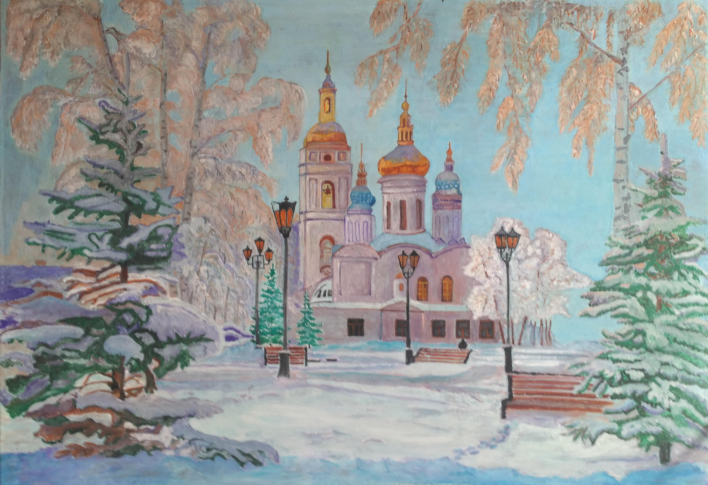

Церковь
Её непышные врата на всю Вселенную раскрыты, нет ей ни страха, ни обиды, и нет ей зла, и нет врага. Её уклад и прям, и прост, Она наполнена сердцами, как гнезда вешние птенцами, что просятся летать до звезд. Она подобна кораблю, тиха средь грохота прибоя. Сияя стигмами пробоин, на всё ответствует:"ЛЮБЛЮ!" Она шатер надежный свой раскинула над миром праздным, восстав, как солнце, в ризе красной над воскресающей Москвой. http://forum-hristian.ru/archive/index.php/t-5829.html